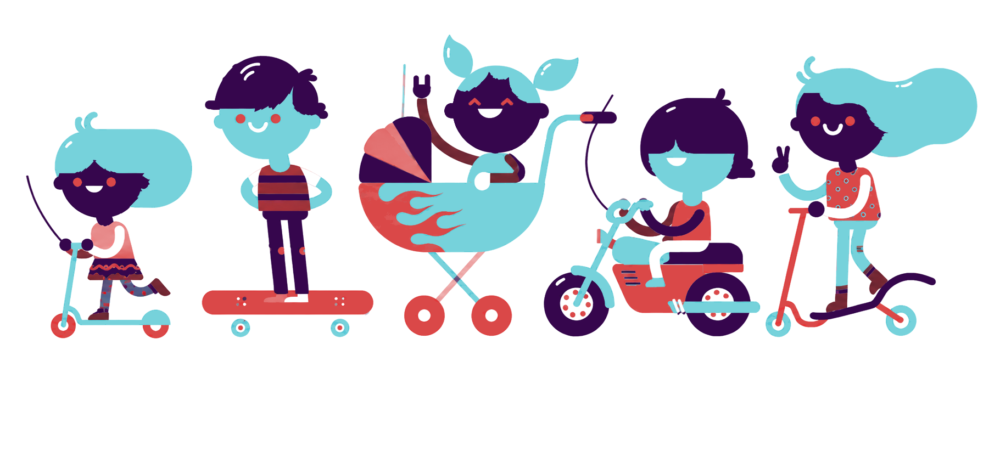

I am Patrick, father of five children (Kioko, Mila, Noa, Kuba and Wolf), and together with my wife Shanna I have lived in a blended family for more than ten years.
TweeHuizen was born from our own daily life. In all those years we kept running into the same problems: planning the care for our children between two households was complicated, unclear and often a source of frustration.
Not because the will was not there, but because there simply was no good tool. Existing apps lacked essential features, were too complicated or did not take into account the dynamics of separated parents who together want the best for their children.
It amazed me that there was no good app for something that affects millions of families every day.
From frustration to solution
Like most good solutions, it starts with a problem you experience yourself. I could not find an existing product that really worked for our situation. And if something does not exist, why not build it yourself? With today's technology that is more accessible than ever.
That is how my journey to TweeHuizen began: an app that was not dreamed up in a meeting room, but at our kitchen table. Because who knows better what a co-parenting app needs than the people who deal with it every day?
Built with my family
I did not develop TweeHuizen in silence. From the very first moment Shanna and the children were involved. Kioko, Mila, Noa, Kuba and Wolf all came up with ideas for features they found important, helped decide what the app should look like, and tested every new version with me. Their voice is woven into every part of the app.
One day the children asked why they still had to remember every morning what to take to handball, football or music lessons. "Can't the app just tell us?" That one question gave birth to the reminders with things to bring feature. When you now add an activity, you tick what needs to come along (handball shoes, swimsuit, football boots, a present) and the parent doing the drop-off (and the child, if they have their own phone) gets a notification in good time:
"In one hour: Noa to handball. To bring: handball shoes, sports kit, water bottle."
Small things like that come straight from children who know where it usually goes wrong. That is exactly what I mean by "dreamed up at the kitchen table".
The result is an app that does not just work technically, but fits how families really function. Fair, calm and clear, exactly what co-parenting needs. I hope TweeHuizen brings calm to your family too.

The inspiration behind TweeHuizen
Patrick, Shanna, Kioko, Mila, Noa, Kuba & Wolf